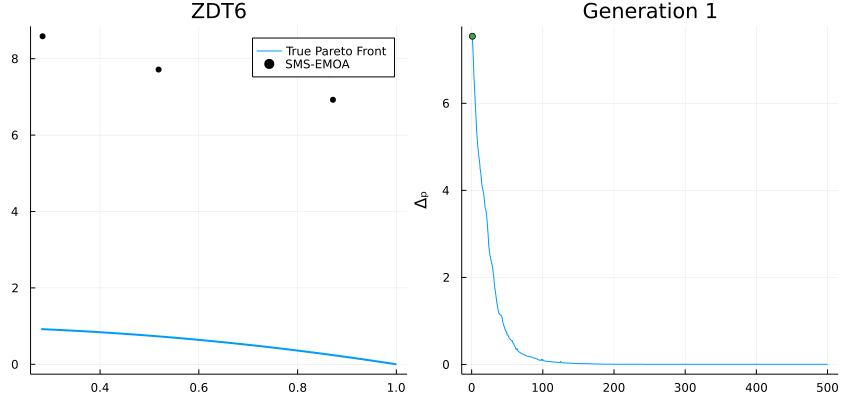
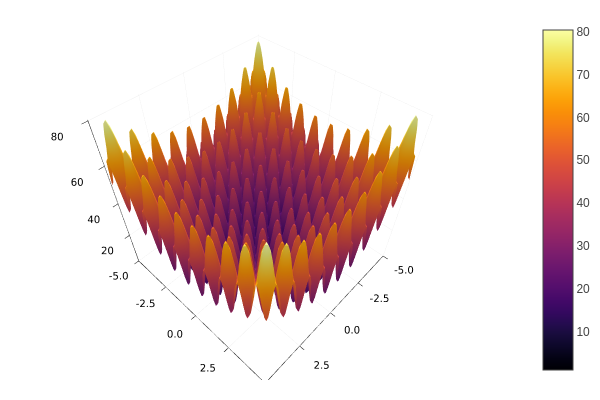
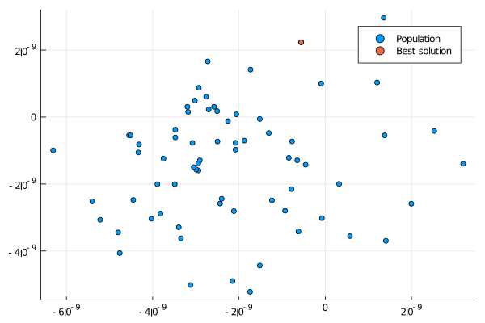
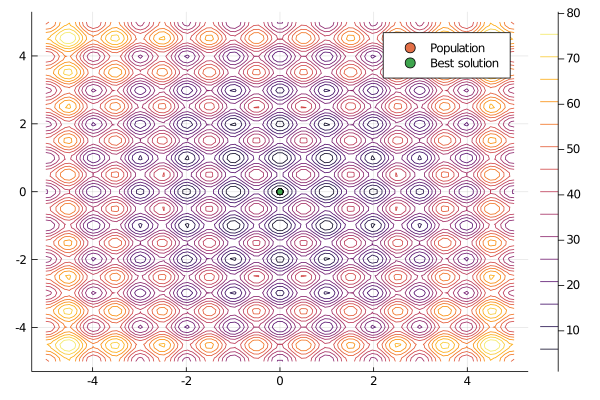
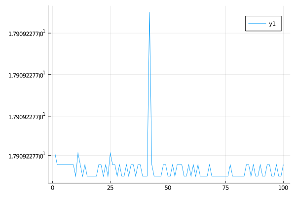
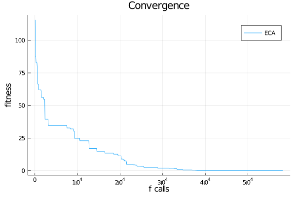
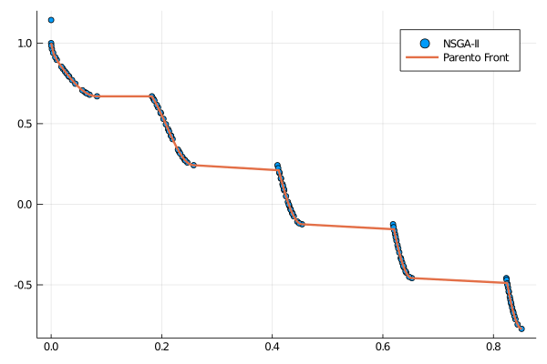

Visualization

Presenting the results using fancy plots is an important part of solving optimization problems. In this part, we use the Plots.jl package which can be installed via de Pkg prompt within Julia:
Type ] and then:
pkg> add PlotsOr:
julia> import Pkg; Pkg.add("Plots")Once Plots is installed on your Julia distribution, you will be able to reproduce the following examples.
Assume you want to solve the following minimization problem.

Minimize:
\[f(x) = 10D + \sum_{i=1}^{D} x_i^2 - 10\cos(2\pi x_i)\]
where $x\in[-5, 5]^{D}$, i.e., $-5 \leq x_i \leq 5$ for $i=1,\ldots,D$. $D$ is the dimension number, assume $D=10$.
Population Distribution
Let's solve the above optimization problem and plot the resulting population (projecting two specific dimensions).
using Metaheuristics
using Plots
gr()
# objective function
f(x) = 10length(x) + sum( x.^2 - 10cos.(2π*x) )
# number of variables (dimension)
D = 10
# bounds
bounds = [-5ones(D) 5ones(D)]'
# Common options
options = Options(seed=1)
# Optimizing
result = optimize(f, bounds, ECA(options=options))
# positions in matrix NxD
X = positions(result)
scatter(X[:,1], X[:,2], label="Population")
x = minimizer(result)
scatter!(x[1:1], x[2:2], label="Best solution")
# (optional) save figure
savefig("final-population.png")

If your optimization problem is scalable, then you also can plot level curves. In this case, let's assume that $D=2$.
using Metaheuristics
using Plots
gr()
# objective function
f(x) = 10length(x) + sum( x.^2 - 10cos.(2π*x) )
# number of variables (dimension)
D = 2
# bounds
bounds = [-5ones(D) 5ones(D)]'
# Common options
options = Options(seed=1)
# Optimizing
result = optimize(f, bounds, ECA(options=options))
# positions in matrix NxD
X = positions(result)
xy = range(-5, 5, length=100)
contour(xy, xy, (a,b) -> f([a, b]))
scatter!(X[:,1], X[:,2], label="Population")
x = minimizer(result)
scatter!(x[1:1], x[2:2], label="Best solution")
# (optional) save figure
savefig("final-population-contour.png")
Objective Function Values
Metaheuristics.jl implements some methods to obtain the objective function values (fitness) from the solutions in the resulting population. One of the most useful methods is fvals. In this case, let's use PSO.
using Metaheuristics
using Plots
gr()
# objective function
f(x) = 10length(x) + sum( x.^2 - 10cos.(2π*x) )
# number of variables (dimension)
D = 10
# bounds
bounds = [-5ones(D) 5ones(D)]'
# Common options
options = Options(seed=1)
# Optimizing
result = optimize(f, bounds, PSO(options=options))
f_values = fvals(result)
plot(f_values)
# (optional) save figure
savefig("fvals.png")
Convergence
Sometimes, it is useful to plot the convergence plot at the end of the optimization process. To do that, it is necessary to set store_convergence = true in Options. Metaheuristics implements a method called convergence.
using Metaheuristics
using Plots
gr()
# objective function
f(x) = 10length(x) + sum( x.^2 - 10cos.(2π*x) )
# number of variables (dimension)
D = 10
# bounds
bounds = [-5ones(D) 5ones(D)]'
# Common options
options = Options(seed=1, store_convergence = true)
# Optimizing
result = optimize(f, bounds, ECA(options=options))
f_calls, best_f_value = convergence(result)
plot(xlabel="f calls", ylabel="fitness", title="Convergence")
plot!(f_calls, best_f_value, label="ECA")
# (optional) save figure
savefig("convergence.png")
Animate convergence
Also, you can plot the population and convergence in the same figure.
Single-Objective Problem
using Metaheuristics
using Plots
gr()
# objective function
f(x) = 10length(x) + sum( x.^2 - 10cos.(2π*x) )
# number of variables (dimension)
D = 10
# bounds
bounds = [-5ones(D) 5ones(D)]'
# Common options
options = Options(seed=1, store_convergence = true)
# Optimizing
result = optimize(f, bounds, ECA(options=options))
f_calls, best_f_value = convergence(result)
animation = @animate for i in 1:length(result.convergence)
l = @layout [a b]
p = plot( layout=l)
X = positions(result.convergence[i])
scatter!(p[1], X[:,1], X[:,2], label="", xlim=(-5, 5), ylim=(-5,5), title="Population")
x = minimizer(result.convergence[i])
scatter!(p[1], x[1:1], x[2:2], label="")
# convergence
plot!(p[2], xlabel="Generation", ylabel="fitness", title="Gen: $i")
plot!(p[2], 1:length(best_f_value), best_f_value, label=false)
plot!(p[2], 1:i, best_f_value[1:i], lw=3, label=false)
x = minimizer(result.convergence[i])
scatter!(p[2], [i], [minimum(result.convergence[i])], label=false)
end
# save in different formats
# gif(animation, "anim-convergence.gif", fps=30)
mp4(animation, "anim-convergence.mp4", fps=30)
Multi-Objective Problem
import Metaheuristics: optimize, SMS_EMOA, TestProblems, pareto_front, Options
import Metaheuristics.PerformanceIndicators: Δₚ
using Plots; gr()
# get test function
f, bounds, pf = TestProblems.ZDT6();
# optimize using SMS-EMOA
result = optimize(f, bounds, SMS_EMOA(N=70,options=Options(iterations=500,seed=0, store_convergence=true)))
# true pareto front
B = pareto_front(pf)
# error to the true front
err = [ Δₚ(r.population, pf) for r in result.convergence]
# generate plots
a = @animate for i in 1:5:length(result.convergence)
A = pareto_front(result.convergence[i])
p = plot(B[:, 1], B[:,2], label="True Pareto Front", lw=2,layout=(1,2), size=(850, 400))
scatter!(p[1], A[:, 1], A[:,2], label="SMS-EMOA", markersize=4, color=:black, title="ZDT6")
plot!(p[2], eachindex(err), err, ylabel="Δₚ", legend=false)
plot!(p[2], 1:i, err[1:i], title="Generation $i")
scatter!(p[2], [i], err[i:i])
end
# save animation
gif(a, "ZDT6.gif", fps=20)Pareto Front
import Metaheuristics: optimize, NSGA2, TestProblems, pareto_front, Options
using Plots; gr()
f, bounds, solutions = TestProblems.ZDT3();
result = optimize(f, bounds, NSGA2(options=Options(seed=0)))
A = pareto_front(result)
B = pareto_front(solutions)
scatter(A[:, 1], A[:,2], label="NSGA-II")
plot!(B[:, 1], B[:,2], label="Parento Front", lw=2)
savefig("pareto.png")
Live Plotting
The optimize function has a keyword parameter named logger that contains a function pointer. Such function will receive the State at the end of each iteration in the main optimization loop.
import Metaheuristics: optimize, NSGA2, TestProblems, pareto_front, Options, fvals
using Plots; gr()
f, bounds, solutions = TestProblems.ZDT3();
pf = pareto_front(solutions)
logger(st) = begin
A = fvals(st)
scatter(A[:, 1], A[:,2], label="NSGA-II", title="Gen: $(st.iteration)")
plot!(pf[:, 1], pf[:,2], label="Parento Front", lw=2)
gui()
sleep(0.1)
end
result = optimize(f, bounds, NSGA2(options=Options(seed=0)), logger=logger)
Visualizing Constraint Violations
For constrained optimization, visualize how constraint violations decrease over time:
using Metaheuristics
using Plots
gr()
# Constrained problem
function constrained_f(x)
fx = sum(x)
gx = [sum(x.^2) + 1.0, x[1]^2 - 2] # two inequality constraints
hx = [0.0]
return fx, gx, hx
end
bounds = boxconstraints(lb = -5ones(5), ub = 5ones(5))
options = Options(store_convergence=true, seed=1)
result = optimize(constrained_f, bounds, ECA(options=options))
# Extract constraint violations over time
violations = Float64[]
for state in result.convergence
# Get best solution's constraint violation
best = state.best_sol
total_violation = sum(max.(0, best.g)) + sum(abs.(best.h))
push!(violations, total_violation)
end
# Plot
plot(1:length(violations), violations,
xlabel="Generation",
ylabel="Total Constraint Violation",
title="Constraint Satisfaction Progress",
xscale=:log10,
legend=false)
savefig("constraint_progress.png")Comparing Multiple Algorithms
Visualize convergence of multiple algorithms on the same problem:
using Metaheuristics
using Plots
gr()
# Define test problem
f(x) = sum(x.^2 .- 10cos.(2π*x)) .+ 10length(x)
bounds = boxconstraints(lb = -5ones(10), ub = 5ones(10))
# Test multiple algorithms
algorithms = [
("ECA", ECA),
("DE", DE),
("PSO", PSO)
]
# Run and collect convergence
p = plot(xlabel="Function Evaluations", ylabel="Best Fitness",
title="Algorithm Comparison", yscale=:log10)
for (name, algo) in algorithms
options = Options(store_convergence=true, seed=1)
algo_with_opts = algo(;options=options)
result = optimize(f, bounds, algo_with_opts)
f_calls, best_f = convergence(result)
plot!(p, f_calls, best_f, label=name, lw=2)
end
savefig(p, "algorithm_comparison.png")3D Pareto Front Visualization
For three-objective problems:
using Metaheuristics
using Plots
gr()
# Three-objective problem (DTLZ2)
f, bounds, pf = Metaheuristics.TestProblems.DTLZ2(3) # 3 objectives
result = optimize(f, bounds, NSGA3(options=Options(seed=0)))
# Get Pareto front
A = pareto_front(result)
# 3D scatter plot
scatter(A[:,1], A[:,2], A[:,3],
xlabel="f₁", ylabel="f₂", zlabel="f₃",
title="3D Pareto Front - DTLZ2",
label="Approximation",
markersize=3,
camera=(135, 45))
savefig("pareto_3d.png")Constraint Violation Heatmap
Visualize constraint violations across 2D decision space:
using Metaheuristics
using Plots
gr()
# 2D constrained problem
function f_2d(x)
fx = sum(x.^2)
gx = [x[1]^2 + x[2]^2 - 1] # circle constraint
hx = [0.0]
return fx, gx, hx
end
# Create grid for visualization
x1_range = range(-2, 2, length=100)
x2_range = range(-2, 2, length=100)
# Calculate constraint violations
violation_map = zeros(length(x2_range), length(x1_range))
for (i, x2) in enumerate(x2_range)
for (j, x1) in enumerate(x1_range)
_, g, _ = f_2d([x1, x2])
violation_map[i, j] = max(0, g[1]) # only positive violations
end
end
# Plot
heatmap(x1_range, x2_range, violation_map,
xlabel="x₁", ylabel="x₂",
title="Constraint Violation Map",
color=:viridis)
# Optimize and overlay solution
result = optimize(f_2d, boxconstraints(lb=[-2,-2], ub=[2,2]), ECA())
x_sol = minimizer(result)
scatter!([x_sol[1]], [x_sol[2]],
label="Solution",
color=:red,
markersize=10,
markershape=:star)
savefig("constraint_heatmap.png")Interactive Plotting with Makie
For interactive visualizations, consider using Makie.jl:
# Note: Install GLMakie first
# using Pkg; Pkg.add("GLMakie")
using GLMakie
using Metaheuristics
# Optimize
f, bounds, true_pf = Metaheuristics.TestProblems.ZDT1()
result = optimize(f, bounds, NSGA2())
# Get fronts
approx_pf = pareto_front(result)
true_front = pareto_front(true_pf)
# Create interactive plot
fig = Figure(resolution=(800, 600))
ax = Axis(fig[1, 1], xlabel="f₁", ylabel="f₂", title="Interactive Pareto Front")
# Plot
scatter!(ax, true_front[:, 1], true_front[:, 2],
label="True Front", color=:blue, markersize=5)
scatter!(ax, approx_pf[:, 1], approx_pf[:, 2],
label="Approximation", color=:red, markersize=8)
axislegend(ax, position=:rt)
display(fig)Interactive plots allow you to:
- Zoom and pan
- Hover for values
- Rotate 3D plots
- Export high-quality figures
Decision Space Animation
Animate how population explores decision space:
using Metaheuristics
using Plots
gr()
# 2D optimization problem
f(x) = (x[1] - 1)^2 + (x[2] + 1)^2
bounds = boxconstraints(lb = [-3.0, -3.0], ub = [3.0, 3.0])
options = Options(store_convergence=true, iterations=50, seed=1)
result = optimize(f, bounds, PSO(options=options))
# Create contour background
x_grid = range(-3, 3, length=50)
y_grid = range(-3, 3, length=50)
z_grid = [f([x, y]) for y in y_grid, x in x_grid]
# Animate
anim = @animate for (i, state) in enumerate(result.convergence)
contour(x_grid, y_grid, z_grid, levels=20,
xlabel="x₁", ylabel="x₂",
title="Generation $i",
colorbar=true)
# Plot population
X = positions(state)
scatter!(X[:, 1], X[:, 2],
label="Population",
color=:red,
markersize=4)
# Plot best
x_best = minimizer(state)
scatter!([x_best[1]], [x_best[2]],
label="Best",
color=:yellow,
markersize=10,
markershape=:star)
end
gif(anim, "decision_space_animation.gif", fps=10)